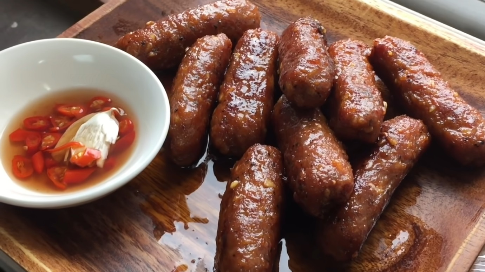

Longanisa

Skinless Longanisa
This is a basic and skinless version of the classic
Filipino sausage called Longanisa. It is sweet and
garlicky. For a delicious breakfast or meal, it
pairs perfectly with sinangag (garlic fried rice)
and eggs.
- 1 ¾ lbs. ground pork
- tablespoons dark brown sugar
- 1 tablespoon smoked paprika
- 3 tablespoons vegetable oil
- 1 ¼ tablespoons coarse salt
- 1 teaspoon ground black pepper
- 2 head garlic
- Peel the skin off the garlic cloves.
Crush thoroughly using mortar and pestle.
Mince the crushed garlic. Set aside.
- In a large mixing bowl, combine
ground pork along with all of the ingredients.
Mix well.
- Cover the bowl. Refrigerate for 2 hours.
- Shape the longganisa by laying a sheet of wax paper
on a flat surface.
Scoop around 3 tablespoons of mixture and put over the
wax paper. Fold the wax paper from top to down until the
mixture covered. Hold the edge of the paper with your
fingers and then slide the card towards the mixture.
Push a bit more until a sausage shape is formed.
Do this step until the entire mixture is consumed.
- Refrigerate overnight.
- Cook and serve for breakfast. Share and enjoy!